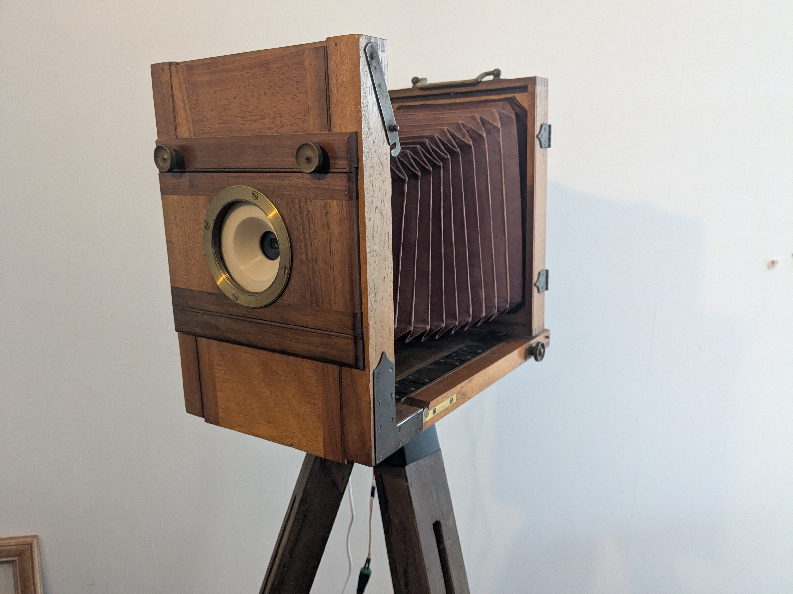
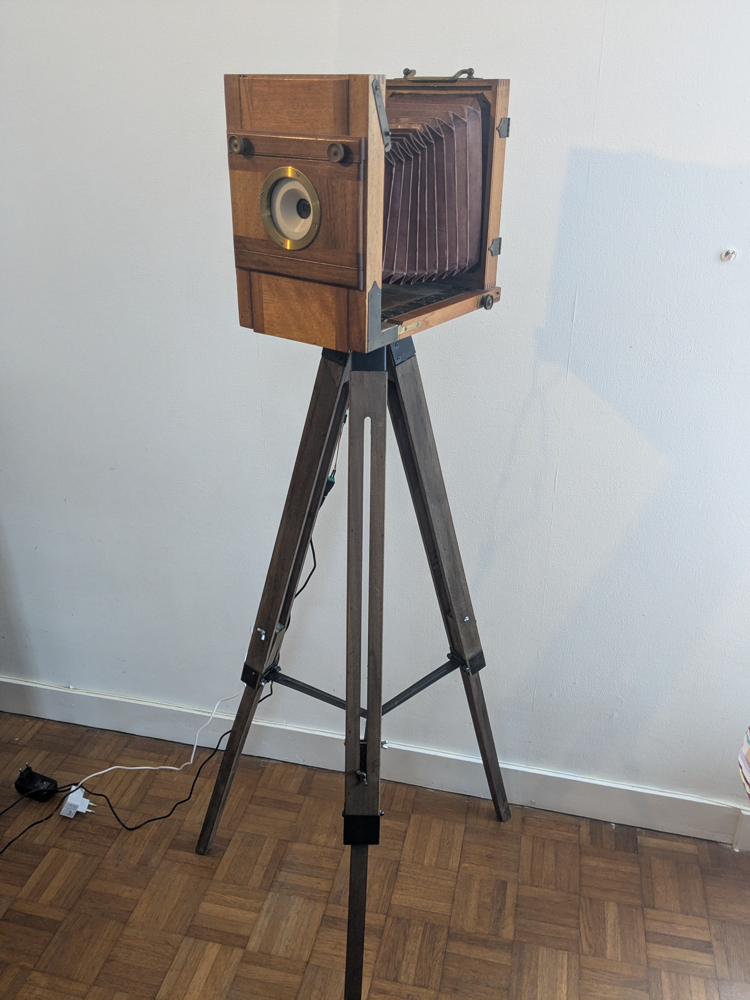
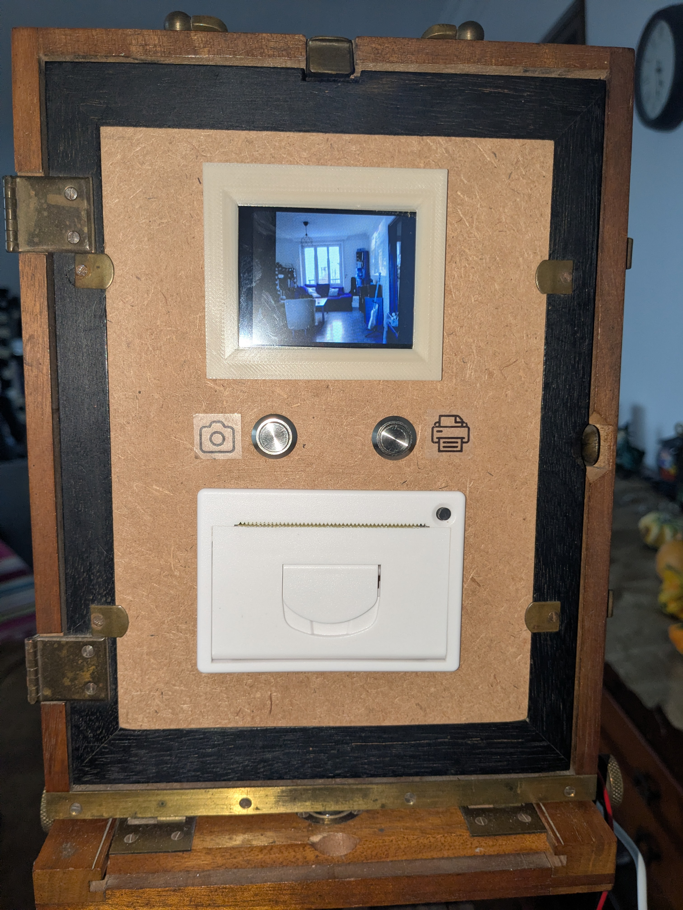
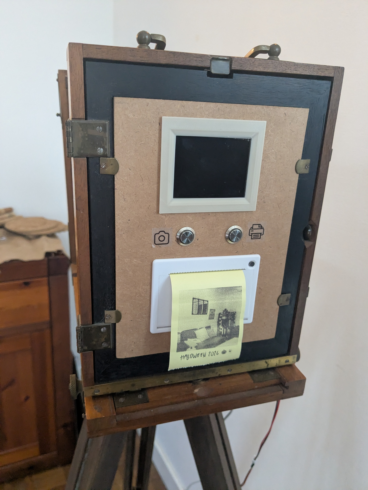
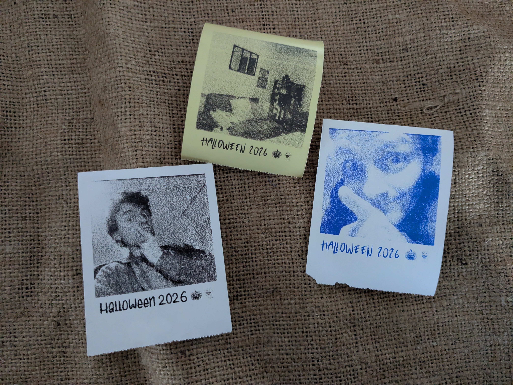

Le projet
Le RetroBooth reprend le principe d'une borne photo classique, mais avec un fonctionnement plus léger pour coller à son style ancien, autour d'un vieil appareil photo à soufflet spécialement restauré pour ce projet.

Comment ça marche ?
Le design reste très simple pour conserver le côté rétro : un mini écran, deux boutons physiques (prendre une photo et imprimer), une imprimante thermique et une webcam. Au démarrage, l'écran affiche l'aperçu de la caméra. Quand on appuie sur le bouton photo, un décompte se lance avant la prise de vue. On peut ensuite imprimer la photo autant de fois qu'on veut avant de revenir à l'écran d'accueil.




Une interface de paramétrage est accessible depuis un téléphone en réseau local pour régler la luminosité, le contraste, le texte sous les photos, etc.